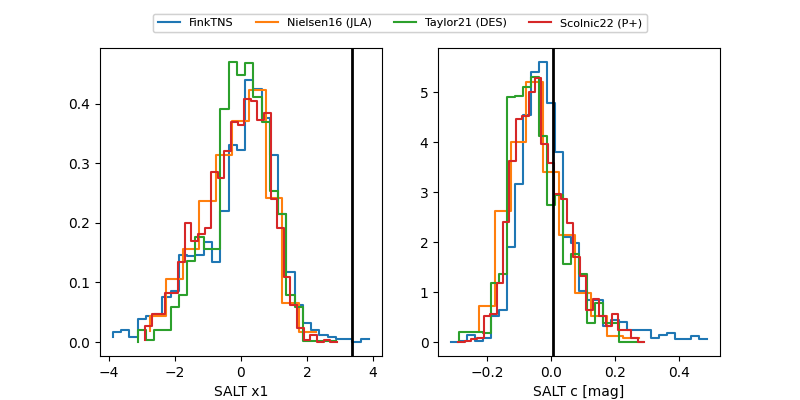

FINK: ZTF25abnnpmt
Lasair: ZTF25abnnpmt
ALeRCE: ZTF25abnnpmt
TNS: 2025wrq
YSE: 2025wrq
ZTF25abnnpmt (ztf,fink)
2025wrq (tns,yse)
ATLAS25kyn (atlas)
equatorial (ra, dec) = (331.3602,+25.82255)
galactic (l, b) = (82.2991,-23.66514)

last atlasc=18.47, atlaso=18.69, ztfg=18.61, ztfr=18.62
3 atlasc, 2 atlaso, 10 ztfg, 8 ztfr detections